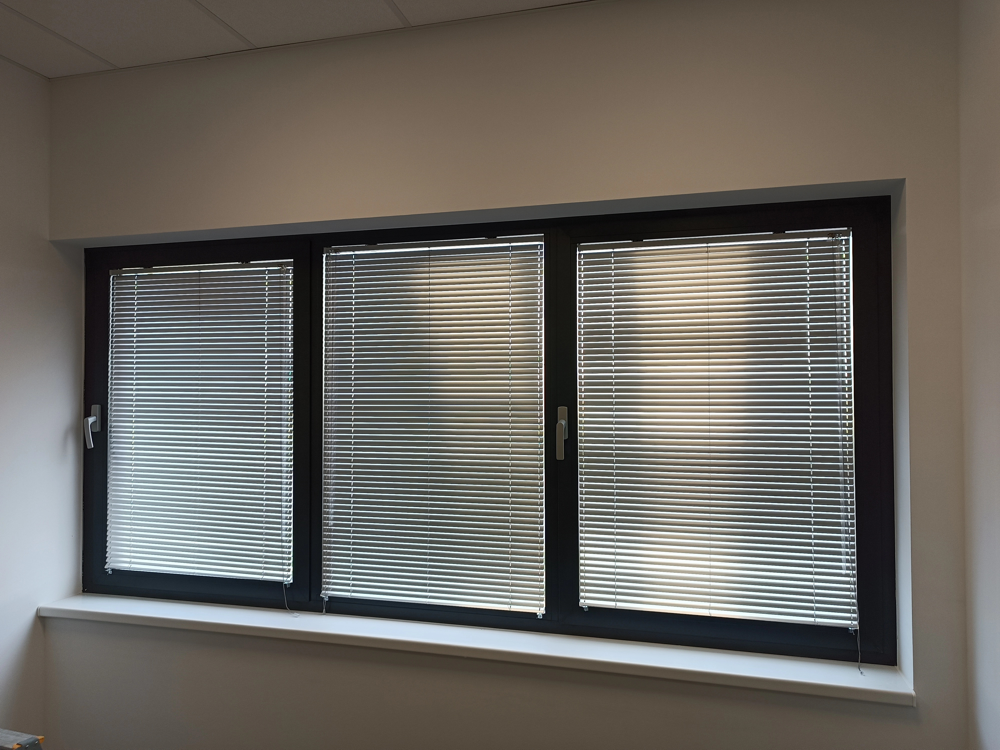
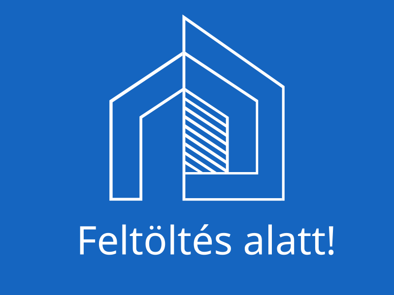

Belső árnyékolók

Reluxa
A reluxák kiválóan szabályozzák a beáramló fényt, modern és letisztult megjelenést biztosítanak bármely helyiségben. Könnyen kezelhetők, tartósak, és számos színben, lamellaméretben elérhetők.
- Precíz fényirányítás, tükröződésmentes munkakörnyezet
- Modern, letisztult design
- Könnyű kezelhetőség, egyszerű tisztítás

Pliszé
A pliszé árnyékolók korszerű, esztétikus árnyékolástechnikai
megoldást jelentenek bármilyen ablakra. Egyedi, harmonikaszerű
textil szerkezetük révén rendkívül rugalmasan mozgathatók, akár
alulról felfelé, akár felülről lefelé is állíthatók.
Kiválóan
alkalmazhatók speciális formájú, például ferde, íves vagy tetőtéri
ablakok esetén is, így maximális fény- és belátásszabályozást
biztosítanak.
- Egyedi méretre gyártható, szinte bármilyen ablakformához
- Kiváló fény- és hőszabályozás
- Könnyű kezelhetőség, modern megjelenés
Roletta
A roletták letisztult, mégis hatékony belső árnyékolástechnikai
megoldást kínálnak ablakok és ajtók számára.
Széles szín- és
mintaválasztékban, fényáteresztő vagy teljesen sötétítő anyagokból
is rendelhetők, így minden igényhez és enteriőrhöz könnyedén
igazíthatók.
Egyszerű kezelhetőségük és sokoldalúságuk révén
ideális választás otthoni és irodai környezetben egyaránt.
- Fényáteresztő és sötétítő változatban
- Egyszerű, gyors felszerelés
- Széles szín- és mintaválaszték
Szalagfüggöny
A szalagfüggönyök esztétikus és funkcionális árnyékolástechnikai
megoldást nyújtanak nagy üvegfelületek, irodák vagy tárgyalók
számára.
Könnyen kezelhetők, modern megjelenésükkel illeszkednek
bármilyen enteriőrhöz, és teljes mértékben egyedi méretben, igény
szerinti szín- és anyagválasztékkal készülnek.
- Nagy üvegfelületekhez ideális
- Egyedi méret, széles színválaszték
- Könnyű kezelhetőség, modern megjelenés